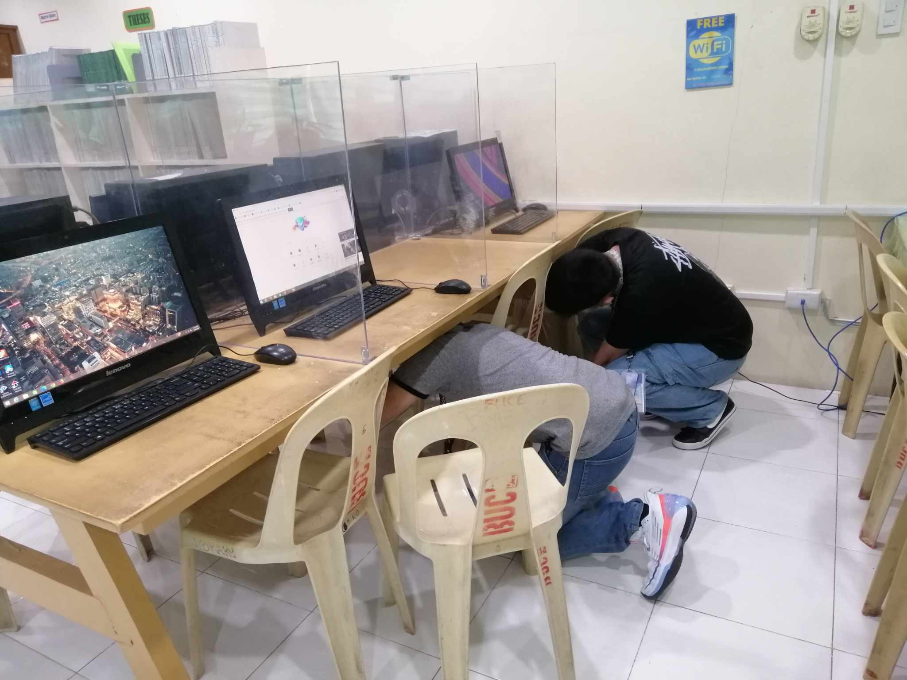
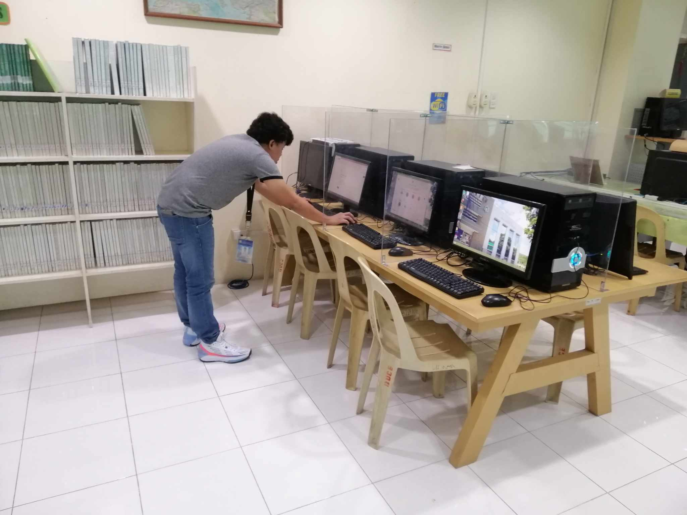
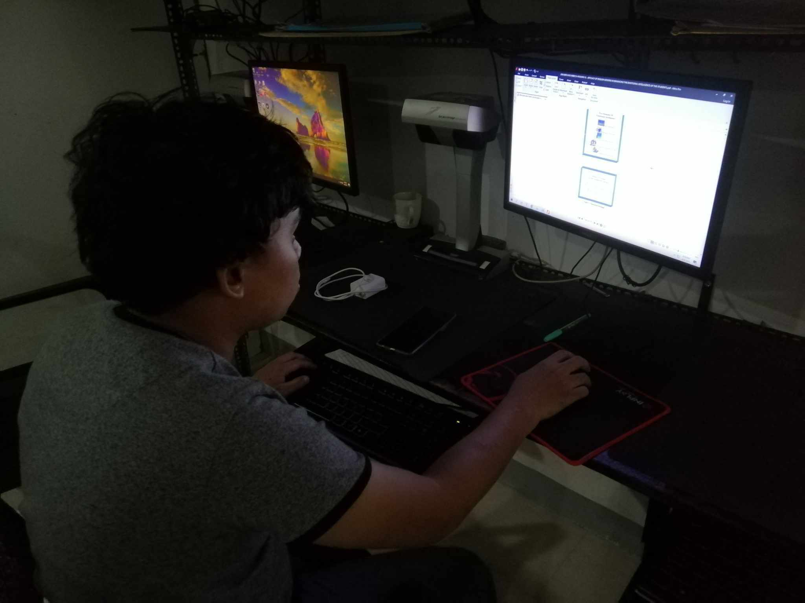
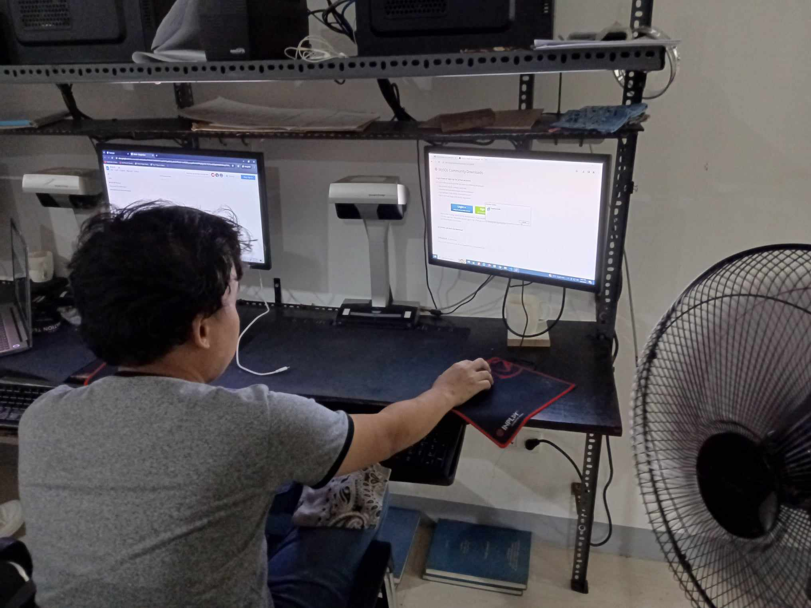
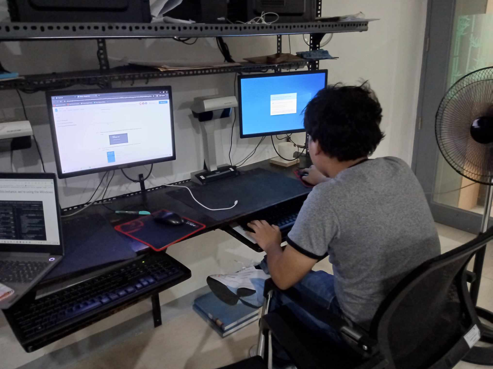
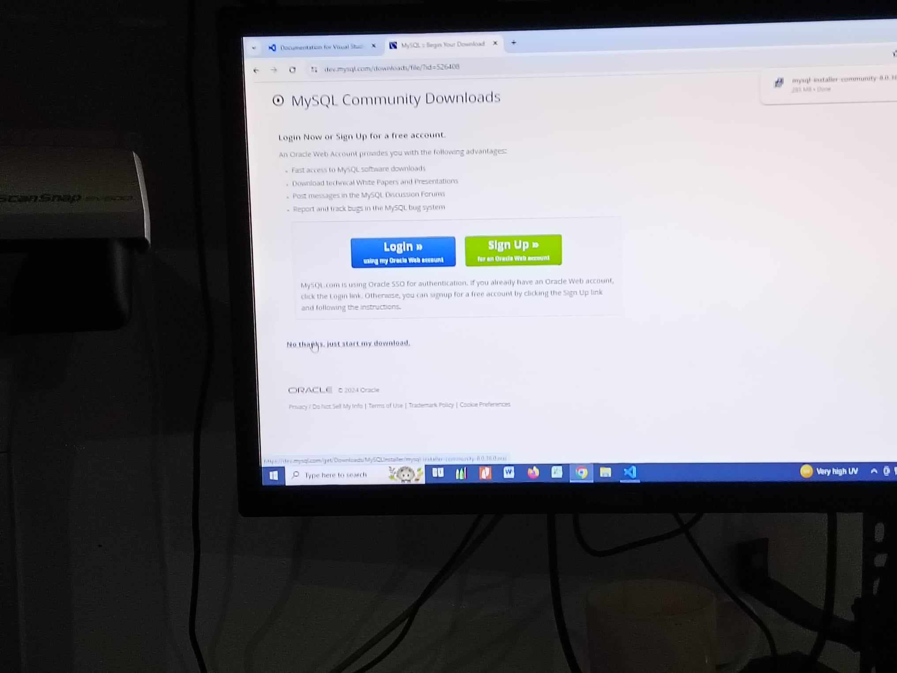

OJT Daily Entry for the Month of April






On this day April 8, In the morning me and Daryle together with Sir Michael to go to College of Medicine Library so we can help to check if the internet on the PC there is working and later on we go back to the University Library to continue re-scanning the previous scanned thesis and later on this afternoon Sir Rolly also tasked us to continue doing the installation of the BULibys System on the PC we were using we gonna do it next week..
HERE ARE SOME TASK I MADE:- Continue to re-scanned previous scanned thesis
- Check the internet on the PC on the College of Medicine Library
- Continue installing and setup of BU Libsystem